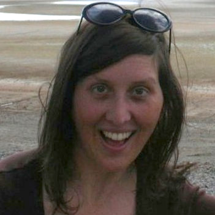
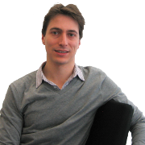

<div id="main">
    <div class="container">
        <div class="row">

            <!-- Content -->
            <div id="content" class="8u skel-cell-important">
                <section>
                    <header>
                        <h2>MOTIVATION</h2>
                    </header>
                    <p>
                        Many 3D wave-based simulations - such as room acoustics or ground penetrating radar - are 
                        complicated to model and even more complex to abstract about. How- ever, such simulations are 
                        integral to predicting the properties and behaviour of the physical world around us. Many 
                        current high-level parallel methodologies focus on stencil applications, but neglect to 
                        manage absorbing boundary conditions which are critical to obtaining coming, this project aims 
                        to take advantage of what is available already and create a modularised approach to simulation 
                        development for HPC. As the HPC landscape expands, developers need to run their codes on newer, 
                        more performant platforms, such as GPUs or Xeon Phis. However, there is a lack of tools that 
                        provide performance portability. Instead, programmers are required to rewrite and retune their 
                        codes as well as maintain multiple code bases. This can be expensive, time-consuming and prone 
                        to error. Computational scientists should be able to focus on their own research and not require 
                        HPC expertise. This project will address this issue with a modularised approach to developing 
                        performant, portable and productive 3D wave models using existing frameworks.
                    </p>
                </section>
                <section>
                    <header>
                        <h2>3D WAVE SIMULATIONS</h2>
                    </header>
                    <p>                       
                        3D wave-based simulations are an important tool in physics for modeling the evolution of waves 
                        through space and time of various mediums. The finite difference time domain method (FDTD) is 
                        a widely used numerical approach for modelling of the 3D wave equation. Space is discritised 
                        into a three-dimensional grid of points, with data values resident at each point representing
                        the field at that point. The state of the system evolves through time-stepping: the value at
                        each point is repeatedly updated using finite differences of values in the neighbourhood of 
                        that point. The so-called stencil of points involved in each update is determined by the
                        choice of discretisation scheme for the partial differential operators in the wave equation. 
                        This numerical approach is computationally expensive, but amenable to parallelisation. In 
                        recent years, there has been progress in the development of techniques to exploit modern 
                        parallel hardware, however much of it is low-level or tied to specific platforms. Ideally, 
                        any software should be able to run in a portable manner across different architectures while 
                        retaining performance and being straightforward to program.
                    </p>
                </section>
                <section>
                    <header>
                        <h2>RELATED WORK</h2>
                    </header>
                    <p>
                        
                        There are currently a wide range of DSLs, code generators, skeleton libraries and other 
                        high-level approaches that focus on stencil applications (ie. Halide, Pochoir, Exastencils and 
                        so on). However, these solutions are limited in the types of stencils they focus on and do not 
                        offer performance portability. Additionally, because they all focus on stencil applications, 
                        there inevitably ends up with similar functionality for common requirements. Ideally, 
                        different DSLs could use a common compiler, so that the DSL writers could focus on the 
                        abstraction layer at the top. This is where <span class="lift-bold">Lift</span> comes in. 
                        <span class="lift-bold">Lift</span> currently is not “productive” 
                        as it is designed to be used as an intermediate language targeted by DSLs to handle low-level 
                        implementation and optimisation. The language is built using a com- position of primitives for 
                        a wide range of algorithms (including stencils). Then a search space of “rewrite rules” (ie. 
                        rules that describe valid transformations of specific primitive compositions) to optimise codes 
                        for a particular platform. OpenCL kernels are produced for all the different “rewrites” until 
                        an optimal program is found. However, <span class="lift-bold">Lift</span> is easily 
                        extensible to other low-level parallel 
                        programming frameworks besides OpenCL (given its modular design), but so far OpenCL has been 
                        the main backend.
                    </p>
                </section>
                <section>
                    <header>
                        <h2>3D WAVE SIMULATION DEVELOPMENT IN LIFT</h2>
                    </header>
                    <p>                       
                        Preliminary results have shown that <span class="lift-bold">Lift</span> is capable of 
                        expressing stencils of varying types 
                        and sizes. In particular, simplified room acoustics simulations have been thoroughly 
                        investigated in the framework and a number of other 2D and 3D benchmarks have also been 
                        implemented. However, the performance of 3D stencils lags behind hand-optimised versions, so 
                        current work also involves developing and formalising stencil optimisations for 3D codes, in 
                        particular 2.5D tiling. Additionally, ground penetrating radar algorithms are also being 
                        implemented. These operate in a similar fashion to room acoustics (using the 3D wave equation 
                        and absorbing boundary conditions), but model both the electric and magnetic fields interacting 
                        with each other. How to best abstract out absorbing boundary conditions needs to be investigated 
                        in more detail and primitives to accommodate these conditions need to be designed and added. 
                        Finally, a stencil-based DSL needs to be extended to compile into the 
                        <span class="lift-bold">Lift</span> language.</p>
                </section>
            </div>

            <!-- Sidebar -->
            <div id="sidebar" class="4u">
                <section style="text-align: center">
                    <header style="text-align: left">
                        <h2>Posters</h2>
                    </header>
                    <div class="thumb_frame" style="margin: 0 auto;">
                        <a href="posters/2017/StoltzfusPPar2017Poster.pdf">
                            <div class="thumb_container">
                                
                                <div class="thumb_overlay">
                                    <div class="thumb_text">
                                        <p class="posted">June 14, 2017</p>
                                        <p class="posted">@ the PPar Student Showcase Event</p>
                                        <br>
                                        <p>A Modular Approach to Performance, Portability and Productivity for 3D Wave Models
                                            Using the Lift Framework</p>
                                    </div>
                                </div>
                            </div>
                        </a>
                    </div>
                </section>
                <section>
                    <header>
                        <h2>Talks</h2>
                    </header>
                    <div class="row">
                        <section>
                            <ul class="style">
                                <li>
                                    <p class="posted">June 14, 2017 @ the PPar Student Showcase Event</p>
                                    <p><a href="presentations/2017/StoltzfusPParShowcase2017.pdf">
                                        Performance, Portability and Productivity for 3D Wave Models</a></p>
                                </li>
                            </ul>
                        </section>
                    </div>
                </section>                
                <section class="profile">
                    <header>
                        <h2>Researchers</h2>
                    </header>
                    <div class="row">
                        <section class="6u">
                            <a href="http://homepages.inf.ed.ac.uk/s1147290/index.html" class="image full">
                                </a>
                            <a href="http://homepages.inf.ed.ac.uk/s1147290/index.html">Larisa Stoltzfus</a>
                            <br>
                            PhD Student
                            <br>
                            <a href="http://www.ed.ac.uk/informatics/">University of Edinburgh</a>
                        </section>
                        <section class="6u">
                            <a href="https://michel-steuwer.github.io/" class="image full">
                                </a>
                            <a href="https://michel-steuwer.github.io/">Michel Steuwer</a>
                            <br>
				Lecturer
                            <br>
                            <a href="https://www.gla.ac.uk/schools/computing/">University of Glasgow</a>
                        </section>
                    </div>
                    <div class="row">
                        <section class="6u">
                            <a href="http://homepages.inf.ed.ac.uk/cdubach/" class="image full">
                                </a>
                            <a href="http://homepages.inf.ed.ac.uk/cdubach/">Christophe Dubach</a>
                            <br>
				Reader
                            <br>
                            <a href="http://www.ed.ac.uk/informatics/">University of Edinburgh</a>
                        </section>
                    </div>
                </section>                
            </div>

        </div>
    </div>
</div>
